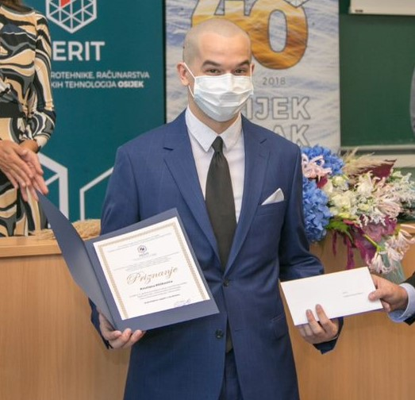

Kristian Klišković rođen je 15.01.2000. u Slavonskom Brodu.
Pohađao je Osnovnu školu Vladimira Nazora u Slavonkom brodu te Tehničku školu Slavonski Brod
koju završava 2018. godine.
Tada upisuje Fakultet elektrotehnike, računarstva i iinformaijih tehnologija u Osijeku.
